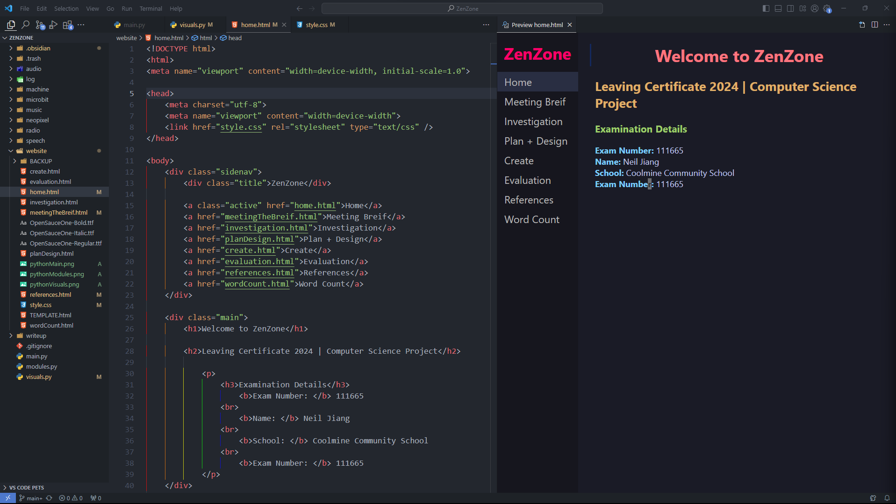

Meeting The Brief
Video and Images of Project
Video of Project
Coding Area (VScode)
Basic Requirement 1
Inputs (Digital & Analogue)
Outputs (Digital & Analogue)
Basic Requirement 2
Storing Data
Data from the user is gathered by using the Microbit
Validating Data
Data will be verified as it is stored on the csv.
Basic Requirement 3
From the dataset gathered by the user, the general emotional state of the user can be calculated and graphed. From this graph, the user can see how their emotions change throughout the day.